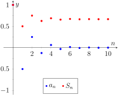
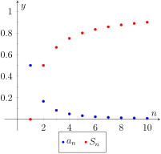
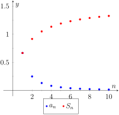
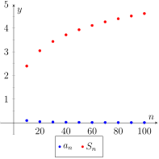
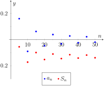
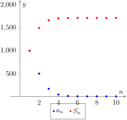

Let \(S_n\) be the sum of the first \(n\) terms of the sequence \(\{1/2^n\}\text{.}\) From the above, we see that \(S_1=1/2\text{,}\)\(S_2 = 3/4\text{,}\) etc. Our formula at the end shows that \(S_n = 1-1/2^n\text{.}\)
Now consider the following limit: \(\lim\limits_{n\to\infty}S_n = \lim_{n\to\infty}\big(1-1/2^n\big) = 1\text{.}\) This limit can be interpreted as saying something amazing: the sum of all the terms of the sequence \(\{1/2^n\}\) is 1.
This example illustrates some interesting concepts that we explore in this section. We begin this exploration with some definitions.
Let \(\{a_n\}\) be a sequence, beginning at some index value \(n=k\text{.}\)
The sum \(\ds \sum_{n=k}^\infty a_n\) is called an infinite series (or, simply series).
Let \(S_n\) denote the sum of the first \(n\) terms in the sequence \(\{a_n\}\text{,}\) known as the \(n\)th partial sum of the sequence. We can then define the sequence \(\{S_n\}\) of partial sums of \(\{a_n\}\text{.}\)
If the sequence \(\{S_n\}\) converges to \(L\text{,}\) we say the series \(\ds \sum_{n=k}^\infty a_n\) converges to \(L\text{,}\) and we write \(\ds \sum_{n=k}^\infty a_n = L\text{.}\)
If the sequence \(\{S_n\}\) diverges, the series \(\ds \sum_{n=k}^\infty a_n\) diverges.
Using our new terminology, we can state that the series \(\ds \infser 1/2^n\) converges, and \(\ds \infser 1/2^n = 1\text{.}\)
Note that in the definition above, we do not necessarily assume that our sum begins with \(n=1\text{.}\) In fact, it is quite common to have a series beginning at \(n=0\text{,}\) and in some cases we may need to consider other values as well. The \(n\)th partial sum \(S_n\) will always denote the sum of the first \(n\) terms: For example, \(\infser 1/n\) has
Since \(\lim\limits_{n\to\infty}S_n = \infty\text{,}\) we conclude that the series \(\ds \infser n^2\) diverges. It is instructive to write \(\ds \infser n^2=\infty\) for this tells us how the series diverges: it grows without bound. A scatter plot of the sequences \(\{a_n\}\) and \(\{S_n\}\) is given in Figure 9.2.4.(a). The terms of \(\{a_n\}\) are growing, so the terms of the partial sums \(\{S_n\}\) are growing even faster, illustrating that the series diverges.
The sequence \(\{b_n\}\) starts with 1, \(-1\text{,}\) 1, \(-1\text{,}\)\(\ldots\text{.}\) Consider some of the partial sums \(S_n\) of \(\{b_n\}\text{:}\)
This pattern repeats; we find that \(S_n = \begin{cases} 1 \amp n\, \text{ is odd } \\, 0 \amp n\, \text{ is even } \end{cases}\text{.}\) As \(\{S_n\}\) oscillates, repeating 1, 0, 1, 0, \(\ldots\text{,}\) we conclude that \(\lim\limits_{n\to\infty}S_n\) does not exist, hence \(\ds\infser (-1)^{n+1}\) diverges. A scatter plot of the sequence \(\{b_n\}\) and the partial sums \(\{S_n\}\) is given in Figure 9.2.4.(b). When \(n\) is odd, \(b_n = S_n\) so the marks for \(b_n\) are drawn oversized to show they coincide.
While it is important to recognize when a series diverges, we are generally more interested in the series that converge. In this section we will demonstrate a few general techniques for determining convergence; later sections will delve deeper into this topic.
Subsection9.2.2Geometric Series
One important type of series is a geometric series.
Note that the index starts at \(n=0\text{,}\) not \(n=1\text{.}\)
We started this section with a geometric series, although we dropped the first term of \(1\text{.}\) One reason geometric series are important is that they have nice convergence properties.
Theorem9.2.6.Geometric Series Test.
Consider the geometric series \(\ds \infser[0] r^n\text{.}\)
The \(n\)th partial sum is: \(\ds S_n = \frac{1-r^{n+1}}{1-r}\text{.}\)
The series converges if, and only if, \(\abs{r} \lt 1\text{.}\) When \(\abs{r}\lt 1\text{,}\)
We begin by proving the formula for the simplied form for the partial sums. Consider the \(n\)th partial sum of the geometric series, \(S_n=\sum_{i=0}^n r^i\text{:}\)
Now, examining the partial sums, we consider four cases to determine when \(S_n\) converges:
If \(\abs{r}\lt 1\text{,}\) then \(r^n \to 0\) as \(n \to \infty\text{,}\) so we have \(\inflim S_n=\frac{1-0}{1-r}=\frac{1}{1-r}\text{,}\) a convergent sequence of partial sums.
If \(\abs{r}\gt 1\text{,}\) then \(r^n \to \pm \infty\) (depending on the sign of \(r\)) as \(n \to \infty\text{.}\) We also have \(1-r\) a constant, so \(\inflim S_n\) does not exist (if \(r \gt 0\text{,}\) the partial sums diverge to \(\infty\) and if \(r \lt 0\text{,}\) the partial sums diverge to \(-\infty\)).
If \(r=1\text{,}\) then \(S_n = \frac{1-1^{n+1}}{1-1}\) is undefined. However, examining \(S_n = 1+r+r^2+\dots+r^{n-1}+r^n\) for \(r=1\text{,}\) we can see that the partial sums simplify to \(S_n=n+1\text{.}\) Clearly this sequence diverges to \(\infty\text{.}\)
If \(r=-1\text{,}\) then \(S_n = \frac{1-(-1)^{n+1}}{2}\text{.}\) For even values of \(n\text{,}\) the partial sums are always \(1\text{.}\) For odd values of \(n\text{,}\) the partial sums are always \(0\text{.}\) So the sequence of partial sums diverges.
Therefore, a geometric series converges if and only if \(\abs{r} \lt 1\text{.}\)
converges as \(r=1/2 \lt 1\text{,}\) and \(\ds \infser[0] \frac{1}{2^n} = \frac{1}{1-1/2} = 2\text{.}\) This concurs with our introductory example; while there we got a sum of 1, we skipped the first term of 1.
Example9.2.8.Exploring geometric series.
Check the convergence of the following series. If the series converges, find its sum.
However, note the subscript of the summation in the given series: we are to start with \(n=2\text{.}\) Therefore we subtract off the first two terms, giving:
The partial sums of this series are plotted in Figure 9.2.10. Note how the partial sums are not purely increasing as some of the terms of the sequence \(\{(-1/2)^n\}\) are negative.

Figure9.2.10.Scatter plots for the series in Item 2
Since \(r \gt 1\text{,}\) the series diverges. (This makes “common sense”; we expect the sum
This is a \(p\)-series with \(p=1\text{.}\) By Theorem 9.2.13, this series diverges. This series is a famous series, called the Harmonic Series, so named because of its relationship to harmonics in the study of music and sound.
This is a \(p\)-series with \(p=2\text{.}\) By Theorem 9.2.13, it converges. Note that the theorem does not give a formula by which we can determine what the series converges to; we just know it converges. A famous, unexpected result is that this series converges to \(\ds{\pi^2}/{6}\text{.}\)
This is a \(p\)-series with \(p=1/2\text{;}\) the theorem states that it diverges.
This is not a \(p\)-series; the definition does not allow for alternating signs. Therefore we cannot apply Theorem 9.2.13. (Another famous result states that this series, the Alternating Harmonic Series, converges to \(\ln(2)\text{.}\))
This is a general \(p\)-series with \(p=3\text{,}\) therefore it converges.
This is not a \(p\)-series, but a geometric series with \(r=1/2\text{.}\) It converges.
Later sections will provide tests by which we can determine whether or not a given series converges. This, in general, is much easier than determining what a given series converges to. There are many cases, though, where the sum can be determined.
Example9.2.15.Telescoping series.
Evaluate the sum \(\ds \infser \left(\frac1n-\frac1{n+1}\right)\text{.}\)
Note how most of the terms in each partial sum are canceled out! In general, we see that \(\ds S_n = 1-\frac{1}{n+1}\text{.}\) The sequence \(\{S_n\}\) converges, as \(\lim\limits_{n\to\infty}S_n = \lim_{n\to\infty}\left(1-\frac1{n+1}\right) = 1\text{,}\) and so we conclude that \(\ds \infser \left(\frac1n-\frac1{n+1}\right) = 1\text{.}\) Partial sums of the series are plotted in Figure 9.2.16.

Figure9.2.16.Scatter plots relating to the series of Example 9.2.15
The series in Example 9.2.15 is an example of a telescoping series. Informally, a telescoping series is one in which most terms cancel with preceding or following terms, reducing the number of terms in each partial sum. The partial sum \(S_n\) did not contain \(n\) terms, but rather just two: 1 and \(1/(n+1)\text{.}\)
When possible, seek a way to write an explicit formula for the \(n\)th partial sum \(S_n\text{.}\) This makes evaluating the limit \(\lim\limits_{n\to\infty} S_n\) much more approachable. We do so in the next example.
(See Section 6.5, Partial Fraction Decomposition, to recall how this is done, if necessary.) Expressing the terms of \(\{S_n\}\) is now more instructive:
We again have a telescoping series. In each partial sum, most of the terms cancel and we obtain the formula \(\ds S_n = 1+\frac12-\frac1{n+1}-\frac1{n+2}\text{.}\) Taking limits allows us to determine the convergence of the series:
We can conclude that \(\{S_n\} = \big\{\ln(n+1)\big\}\text{.}\) This sequence does not converge, as \(\lim\limits_{n\to\infty}S_n=\infty\text{.}\) Therefore \(\ds\infser \ln\left(\frac{n+1}{n}\right)=\infty\text{;}\) the series diverges. Note in Figure 9.2.18.(b) how the sequence of partial sums grows slowly; after 100 terms, it is not yet over 5. Graphically we may be fooled into thinking the series converges, but our analysis above shows that it does not.
(a)
(b)
Figure9.2.18.Scatter plots relating to the series in Example 9.2.17
We are learning about a new mathematical object, the series. As done before, we apply “old” mathematics to this new topic.
Theorem9.2.19.Properties of Infinite Series.
Let \(\ds \infser a_n = L\text{,}\)\(\ds\infser b_n = K\text{,}\) and let \(c\) be a constant.
This looks very similar to the series that involves \(e\) in Key Idea 9.2.20. Note, however, that the series given in this example starts with \(n=1\) and not \(n=0\text{.}\) The first term of the series in the Key Idea is \(1/0! = 1\text{,}\) so we will subtract this from our result below:
This is illustrated in Figure 9.2.22.(b). The graph shows how this particular series converges very rapidly.
(a)
(b)
Figure9.2.22.Scatter plots relating to the series in Example 9.2.21
The denominators in each term are perfect squares; we are adding \(\ds \sum_{n=4}^\infty \frac{1}{n^2}\) (note we start with \(n=4\text{,}\) not \(n=1\)). This series will converge. Using the formula from Key Idea 9.2.20, we have the following:
It may take a while before one is comfortable with this statement, whose truth lies at the heart of the study of infinite series: it is possible that the sum of an infinite list of nonzero numbers is finite. We have seen this repeatedly in this section, yet it still may “take some getting used to.”
As one contemplates the behavior of series, a few facts become clear.
In order to add an infinite list of nonzero numbers and get a finite result, “most” of those numbers must be “very near” 0.
If a series diverges, it means that the sum of an infinite list of numbers is not finite (it may approach \(\pm \infty\) or it may oscillate), and:
The series will still diverge if the first term is removed.
The series will still diverge if the first 10 terms are removed.
The series will still diverge if the first \(1,000,000\) terms are removed.
The series will still diverge if any finite number of terms from anywhere in the series are removed.
These concepts are very important and lie at the heart of the next two theorems.
Theorem9.2.23.\(n\)th-Term Test for Divergence.
Consider the series \(\ds\infser a_n\text{.}\) If \(\lim\limits_{n\to\infty}a_n \neq 0\text{,}\) then \(\ds\infser a_n\) diverges.
Important! This theorem does not state that if \(\ds \lim_{n\to\infty} a_n = 0\) then \(\ds \sum_{n=1}^\infty a_n\) converges. The standard example of this is the Harmonic Series, as given in Key Idea 9.2.20. The Harmonic Sequence, \(\{1/n\}\text{,}\) converges to 0; the Harmonic Series, \(\ds \sum_{n=1}^\infty \frac1n\text{,}\) diverges.
Looking back, we can apply this theorem to the series in Example 9.2.3. In that example, the \(n\)th terms of both sequences do not converge to 0, therefore we can quickly conclude that each series diverges.
One can rewrite Theorem 9.2.23 to state “If a series converges, then the underlying sequence converges to 0.” While it is important to understand the truth of this statement, in practice it is rarely used. It is generally far easier to prove the convergence of a sequence than the convergence of a series.
Theorem9.2.24.Infinite Nature of Series.
The convergence or divergence of an infinite series remains unchanged by the addition or subtraction of any finite number of terms. That is:
A divergent series will remain divergent with the addition or subtraction of any finite number of terms.
A convergent series will remain convergent with the addition or subtraction of any finite number of terms. (Of course, the sum will likely change.)
Consider once more the Harmonic Series \(\ds\infser \frac1n\) which diverges; that is, the sequence of partial sums \(\{S_n\}\) grows (very, very slowly) without bound. One might think that by removing the “large” terms of the sequence that perhaps the series will converge. This is simply not the case. For instance, the sum of the first 10 million terms of the Harmonic Series is about 16.7. Removing the first 10 million terms from the Harmonic Series changes the \(n\)th partial sums, effectively subtracting 16.7 from the sum. However, a sequence that is growing without bound will still grow without bound when 16.7 is subtracted from it.
The equations below illustrate this. The first line shows the infinite sum of the Harmonic Series split into the sum of the first 10 million terms plus the sum of “everything else.” The next equation shows us subtracting these first 10 million terms from both sides. The final equation employs a bit of “psuedo-math”: subtracting 16.7 from “infinity” still leaves one with “infinity.”
it is not apparent that the partial sums diverge. Indeed they do diverge, but very, very slowly. (If you graph them on a logarithmic scale however, you can clearly see the divergence of the partial sums.) Instead, we will consider the partial sums, indexed by powers of \(2\text{.}\) That is, we will consider \(S_2,S_4, S_8, S_{16}, \dots\text{.}\)
Generally, we can see that \(S_{2^n} \gt 1+\frac{n}2\text{.}\) (In order to really show this, we should employ proof by induction.) Since the sequence of partial sums clearly diverges, so does the series \(\infser 1/n\text{.}\)
This section introduced us to series and defined a few special types of series whose convergence properties are well known: we know when a \(p\)-series or a geometric series converges or diverges. Most series that we encounter are not one of these types, but we are still interested in knowing whether or not they converge. The next three sections introduce tests that help us determine whether or not a given series converges.
Exercises9.2.4Exercises
Terms and Concepts
1.
Use your own words to describe how sequences and series are related.
2.
Use your own words to define a partial sum.
3.
Given a series \(\ds \infser a_n\text{,}\) describe the two sequences related to the series that are important.
4.
Use your own words to explain what a geometric series is.
5.
T/F: If \(\{a_n\}\) is convergent, then \(\ds \infser a_n\) is also convergent.
6.
T/F: If \(\{a_n\}\) converges to 0, then \(\ds \sum_{n=0}^\infty a_n\) converges.
Problems
Exercise Group.
In the following exercises, a series \(\ds\infser a_n\) is given.
Give the first 5 partial sums of the series.
Give a graph of the first 5 terms of \(a_n\) and \(S_n\) on the same axes.
7.
\(\ds \infser \frac{(-1)^n}{n}\)
8.
\(\ds \infser \frac{1}{n^2}\)
9.
\(\ds \infser \cos(\pi n)\)
10.
\(\ds \infser n\)
11.
\(\ds \infser \frac{1}{n!}\)
12.
\(\ds \infser \frac{1}{3^n}\)
13.
\(\ds \infser \left(-\frac{9}{10}\right)^n\)
14.
\(\ds \infser \left(\frac{1}{10}\right)^n\)
Exercise Group.
In the following exercises, use Theorem 9.2.23 to show the given series diverges.
15.
\(\ds \infser \frac{3n^2}{n(n+2)}\)
16.
\(\ds \infser \frac{2^n}{n^2}\)
17.
\(\ds \infser \frac{n!}{10^n}\)
18.
\(\ds \infser \frac{5^n-n^5}{5^n+n^5}\)
19.
\(\ds \infser \frac{2^n+1}{2^{n+1}}\)
20.
\(\ds \infser \left(1+\frac1n\right)^n\)
Exercise Group.
In the following exercises, state whether the given series converges or diverges.
21.
\(\ds \infser \frac{1}{n^5}\)
22.
\(\ds \infser[0] \frac{1}{5^n}\)
23.
\(\ds \infser[0] \frac{6^n}{5^n}\)
24.
\(\ds \infser n^{-4}\)
25.
\(\ds \infser \sqrt{n}\)
26.
\(\ds \infser \frac{10}{n!}\)
27.
\(\ds \infser \left(\frac{1}{n!}+\frac1n\right)\)
28.
\(\ds \infser \frac{2}{(2n+8)^2}\)
29.
\(\ds \infser \frac{1}{2n}\)
30.
\(\ds \infser \frac{1}{2n-1}\)
Exercise Group.
In the following exercises, a series is given.
Find a formula for \(S_n\text{,}\) the \(n\)th partial sum of the series.
Determine whether the series converges or diverges. If it converges, state what it converges to.
The goal is to show that each of the series on the right diverge.
Show why \(\ds \infser \frac{1}{2n-1} \gt \infser \frac{1}{2n}\text{.}\) (Compare each \(n\)th partial sum.)
Show why \(\ds\infser \frac{1}{2n-1}\lt 1+\infser \frac{1}{2n}\)
Explain why (a) and (b) demonstrate that the series of odd terms is convergent, if, and only if, the series of even terms is also convergent. (That is, show both converge or both diverge.)
Explain why knowing the Harmonic Series is divergent determines that the even and odd series are also divergent.
48.
Show the series \(\ds \infser \frac{n}{(2n-1)(2n+1)}\) diverges.